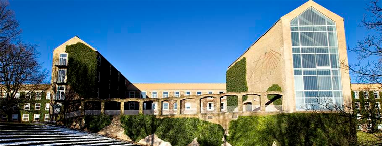

Den smukke og gamle arkitektur i Aarhus står stadig og her kan blandt andet nævnes:
- Aarhus teater
- Retsygningen -Tinghuset
- Toldboden
- Aarhus Universitet
Aarhus Teater er Danmarks største landsdelsscene med plads til 1200 tilskuere og opført i slutningen af 1890’erne på initiativ af teaterinteresserede borgere i Aarhus. Bygningen, som er en arkitektonisk perle i jugendstil, blev indviet 1900 og har været fredet siden 1990. Teatret er bevaret i sin oprindelige pragt som kulturelt kraftcenter midt i Danmarks næststørste by. Aarhus Teater er tegnet af arkitekten Hack Kampmann, som er arkitekten bag flere af tidens mest markante offentlige bygninger i Aarhus – bl.a. Marselisborg Slot, Toldboden, Erhvervsarkivet og Aarhus Katedralskole. Udsmykningerne er udført af billedkunstneren Karl Hansen-Reistrup, og Holberg-figurerne på teatrets facade er skabt af professor Hans Tegner. Under balkonen ses Aarhus’ byvåben. Skjold med portal og to tårne, der symboliserer byens tidligste kirke. Bølgerne forneden henviser til byens placering ved havet og åen. Over portalen og spirene ses en måne og en syvtakket stjerne. Inde i portalen sidder byens skytshelgen Sct. Clemens med et anker og apostlen Paulus har et sværd med spidsen pegende mod jorden, som tegn på fred. Mere symbol på Aarhus bliver det ikke.
Retsbygningen - Tinghuset
Retten i Aarhus er blevet ombygget til en moderne retsbygning inden for de smukke eksisterende 4100 m², som den gamle retsbygning fra 1906 sætter rammer for. Retsbygningen er oprindeligt tegnet af K.A. Ludvigsen og Jul. Hansen. Bygningens dekorationer, inklusiv de to løver i bronze som pryder indgangspartiet, er udført af Karl Hansen Reistrup. Tinghuset var oprindeligt indrettet til politivagt med detentionslokaler, stadslogens kontor, byfogeden og forligskommissionen, arrestforvarerens bolig og til amtsrådssal, men fungerer i dag alene som retsbygning. Tinghuset gennemgik omfattende renovationer og indvendige moderniseringer i årene 1998-2004 og igen i 2014-15. Renoveringen fra 2014 til 2016 er i det hele søgt gennemført med respekt for det oprindelige Tinghus, hvor flere friser, søjler og træbeklædninger er renoveret og bevaret, ligesom det oprindelige tårnur nu er blevet blotlagt og automatiseret.

Toldboden
Den gamle toldbygning er hovedværket af arkitekt Hack Kampmanns, som også har lagt navn til den plads bygningen står på. Toldboden blev opført fra 1895-1897. Bygningen vender ryggen til byen, men åbner sig mod havnefronten. Fra de to karnapper havde tolderen oprindeligt frit udsyn over kyststrækningen fra syd mod nord. Dermed kunne han altid vide, hvem der kom sejlende til byen.
Toldkammerbygningen er i høj grad inspireret af Aarhus’ byvåben. Byvåbenet er gengivet i en smuk udskæring over indgangspartiet til huset. Man kan tydeligt se, hvordan det danner forbillede for udformningen af bygningen med det dominerende midtertårn flankeret af to lavere tårne.
Bygningen er flere steder er bygningen udsmykket med motiver fra havet: Mågerne har bygget rede på skorstenene. Månerne og stjernerne under tagudhænget symboliserer navigationspunkter. Og spærene afsluttes af søpapegøjer. Bygningen er ornamenteret ved at kombinere tegl i forskellige geometriske mønstre.
Aarhus Universitet
Ligesom Aarhus Rådhus er Aarhus Universitet også optaget i Kulturkanonen i 2006 for universitetets anerkendte arkitektoniske kvalitet. Universitetet udført i 1931 af arkitekterne Kay Fisker, C.F. Møller og Povl Stegmann sammen med havearkitekten C.Th. Sørensen. De første bygninger, der stod klar i 1933, er tegnet af disse arkitekter. Senere bygninger er opført i samme stil med C.F. Møller som arkitekt. Udseendet skyldes blandt andet, at Forenede Jydske Teglværker støttede universitetsprojektet med en million gule mursten. Universitetets hovedbygninger er samlet i og omkring Universitetsparken, der gennem årene er blevet udvidet en del. I et harmonisk samspil med den kuperede park danner de ensartede bygninger en smuk campus, der har opnået international berømmelse. De karakteristiske gulstensbygninger i Universitetsparken rummer et samlet etageareal på 246.000 m². I Universitetsparken finder man desuden Steno Museet, Naturhistorisk Museum, Antikmuseet, Statsbiblioteket og kollegiebygninger, der alle har samme arkitektoniske stil
ArkAar er et online magasin om arkitektur i Aarhus. Aarhus har en masse spændende arkitektur helt tilbage fra slutningen af 1800-tallet og frem til nu og Aarhus fortsætter kun med at være langt fremme i skoene, når det gælder arkitektur, da den nye bydel Aarhus Ø er under udvikling, hvor der er kommet og kommer nye arkitektoniske bygninger til.ArkAar er et online magasin om arkitektur i Aarhus. Aarhus har en masse spændende arkitektur helt tilbage fra slutningen af 1800-tallet og frem til nu og Aarhus fortsætter kun med at være langt fremme i skoene, når det gælder arkitektur, da den nye bydel Aarhus Ø er under udvikling, hvor der er kommet og kommer nye arkitektoniske bygninger til.